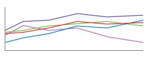
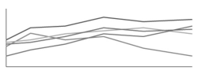
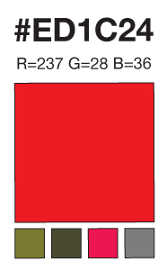

Continuing on the theme of chromatics, first I experimented with generating unique colors based on a location on the globe, then walked through finding the highest contrasting color to pair-up with deterministically created results. Finally, it is important to examine what happens to color when there are deficiencies, either genetic or technological.
Many usability, accessibility and design sites emphasis that you should never use color to convey meaning. This is because a percentage of the population might not see the colors in the same way that you do, not to mention the device being unable to render color. In those cases, the meaning is lost. This is partly why traffic lights are always ordered in the same way and that road signs come in various shapes and sizes. Even without color, the reader is still able to glean the necessary information.
As we create charts, graphs or any visual language, color plays an important role, but is also a source of potential confusion. Designers choose colors that look best or match some sort of corporate theme without considering the consequences. Even if we remove all the associations of cultural meaning in color, we still have potential problems with color clashes when the spectrum is reduced.
In this article, we’ll get a list of colors which work well with various forms of color blindness and in greyscale by finding which have enough contrast across all the different issues. If you fall back to these color swatches, then you’re assured that no matter your audience or medium, a strong enough distinction between the values will be made and confusion minimized.
Color Blindness
About 10% males and a small percentage of females suffer from some sort of color blind deficiency. Color “blind” is not strictly speaking the correct term, people who have this affliction are not blind to color, but rather see a limited set of wavelengths differently.
To see the world through someone else’s eyes, there is a great tool for both the Mac and PC called Color Oracle. This tiny applications puts your monitor into different modes so you can see what your designs look like by altering the wavelengths simulating various afflictions. This is a great tool to quickly switch back and forth to check for color problems.
There are three major types of color blindness, Deutranopia, Protanopia and Tritanopia. To see how they compare, I have taken a sample photo and adjusted the wavelengths of the image to simulate these three issues from left to right, starting with the regular image.
As you can see, there are some fairly large differences. (If you don’t see a difference between some of the images, then you might want to have your eyes checked.) By testing your design you can quickly see that some of the colors you have chosen will look radically different to some people. This becomes a problem when you create visualizations such as a line graph. If you choose red and green colors for two of the lines and then correctly label them as company X’s monthly income versus company Y’s, you still have problems. For normal vision, those two lines jump right off the page as different colors, but for a small per centage of people, they have difficulty and it might be impossible to tell the difference, even with a key.
Beyond vision disabilities, you have even more common and simple issues of greyscale. This results from cheap ink jets printers, faxes or lazer printers. If we look again at the line chart, you can see that it is very difficult to identify the red and green lines, even with a key.
This might seem like a silly issue to worry about, everyone has a color monitor—they can just look at the PDF or website. That isn’t completely true, even today some new devices such as the Kindle are being manufactured and sold as black and white devices.
Rather than spending your time choosing colors, worrying about accessibility and testing endlessly, it is much easier to settle on a confined set of colors which you know will will across various platforms, devices and disabilities.
Restricted Color Pallet
So what are the options? You want to select colors that are both high enough contrast that they can be distingusted by all 3 types of color blindness and at the same time work well in greyscale!
With some trial and error, I took various color swatches and ran them through each of the three color blind options and greyscale. For example, this shade of red (#ED1C24) comes out vastly differently when converted into the other four options. By itself, this isn’t very usuful because you need to be able to compare it to several other colors at once, because when this red moves to a yellow, will it conflict with that orange you are using? When in doubt, you should stick with a single monotone color palette, from white to black and a single hue in between. That way, if someone does have issues, all the colors will shift accordingly, including in greyscale. But what if you need to have more contrast or use multiple colors? It is possible. I have created a small set of swatches that work across the various issues with minimal confusion.
The first line is the regular color swatches. The following three lines are the major types of color blindness followed by greyscale. As you can see, no matter what set of colors you choose, they will not clash.
Once you have this core colors pallette, you have a nice toolbox for choosing appropriate colors for your charts and graphs. Before going off and selecting your own colors, choose from a pre-made list which is known not to conflict, while it’s not the most extensive, it is guaranteed to work best in all situations simultaneously.
If you are only dealing with two colors, then you should use the extremes, black and white. If a third color is needed, then choose one from the middle. If you need more colors, then try to space them out so their contrasts in greyscale minimize the similarities, such as the 1st, 3rd, 5th, and 7th colors.
Someone told me that I should seek inspiration from board game companies. I thought this was a great idea, they have thousands of customers, they will certainly run into this problem with some small percentage. Monopoly was suggested to me because the currency is all different colors. I found the HEX values for the bills and ran the results through the Color Oracle. Sadly, they are in no way safe for color blindness or greyscale.
But that’s OK. They are not depending on color to convey meaning. On each of the currency notes is the more important value. The key to understanding the value is the printed number, not the color. This is also why the game pieces are not the same shape, but rather houses, cars, dogs, boats, etc. When you start to look around, you will notice that boardgames actually are aware of color issues and mark the objects with something more that just color sometimes it is a shape, text or others features to let the players distinguish the differences.
Conclusion
Be careful when selecting your color palette, by accident you might choose safe colors, but in the worst case you might create confusion which leads to something much worse! Imagine a scenario where you color code prescription drugs for different family members. If someone has any color deficiencies, it could lead to horrible consequences if they mistake the bottles.
Always check your designs, either with someone who is color blind or with a simple application. It leads to a much better, robust design for everyone. Once you get into the habit, you’ll get the feel for the general issues. You can use my color palette or develop your own based on your color scheme. The important part is that you are aware of the problem with both humans and devices and you do your best to design around it by using safe defaults.